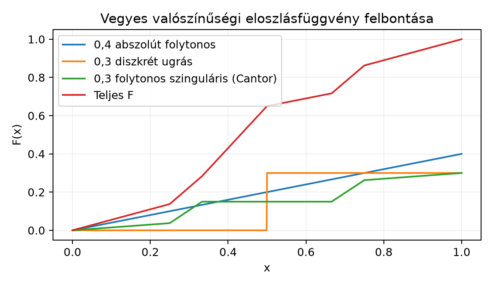

13.3 A Lebesgue-felbontás: abszolút
folytonos, szinguláris és diszkrét rész
13.3.1 Motiváció
A Radon–Nikodym-tétel megadta, mikor létezik
egy mértéknek sűrűségfüggvénye egy másik mértékre nézve. A gyakorlatban
azonban gyakran találkozunk olyan mértékekkel, amelyek nem tisztán
sűrűségfüggvényesek: egy biztosítási kár eloszlása tartalmazhat
folytonos részt a kis károkra, de ponttömeget is a nagy, ritka
eseményekre. Emellett vannak olyan mértékek, amelyeknek nincs sűrűségük,
mégsem tartalmaznak ponttömeget: ilyen a Cantor-mérték. A
Lebesgue-felbontás (Lebesgue decomposition) ezeket a lehetőségeket
egyetlen keretben rendezi össze.
13.3.2 Szemléletes kép
Egy valószínűségi eloszlásfüggvény három jellegzetes komponensből
állhat:
az abszolút folytonos részből, amely sima, deriválható szakaszokkal
növekszik, és a deriváltja a sűrűségfüggvény;
a diszkrét részből, amely ugrásokként jelenik meg;
a folytonos szinguláris részből, amely folytonos, tehát nincsenek
ugrásai, de a növekedése egy Lebesgue-nullmértékű halmazra
koncentrálódik, így nincs sűrűségfüggvénye.
Az alábbi ábra egy ilyen vegyes eloszlásfüggvényt és a három
komponensét mutatja. A teljes függvény nem sima, mert ugrást és
Cantor-típusú lépcsős szerkezetet is tartalmaz.

Vegyes valószínűségi eloszlásfüggvény
felbontása - Az értékek a 0,4·F_U(x) + 0,3·H(x−0,5) + 0,3·F_Cantor(x)
képletből számítva; a diszkrét ugrás jobbról folytonos.
A folytonos szinguláris komponens a Cantor-függvényből származik,
amely majdnem mindenütt konstans, mégis az egész tömegét egy nullmértékű
halmazon, a Cantor-halmazon veszi fel.
13.3.3 Definíciók
Először a „másik mértékre merőleges” mérték fogalmát rögzítjük.
Definíció. Legyen
mérhető tér, és legyenek
mértékek
-n. Azt
mondjuk, hogy
és
kölcsönösen szingulárisak, jelben
,
ha létezik olyan
halmaz, amelyre
Ilyenkor
az
halmazra koncentrálódik,
pedig az
halmazra, tehát a két mérték lényegében diszjunkt halmazokon él.
Példa. A Dirac-mérték és a Lebesgue-mérték
kölcsönösen szingulárisak:
.
Valóban, válasszuk az
halmazt. Ekkor
és
Definíció. Legyen
σ-véges mértéktér, és legyen
σ-véges mérték
-n. Azt
mondjuk, hogy a
előállítás a
mérték Lebesgue-felbontása
-ra
nézve, ha
,
azaz
abszolút folytonos
-ra
nézve;
,
azaz
szinguláris
-ra
nézve.
Az
mértéket a
abszolút folytonos részének, az
mértéket a
szinguláris részének nevezzük.
13.3.4 A Lebesgue-felbontási
tétel
A következő tétel a mértékelmélet egyik központi strukturális
eredménye.
Tétel. Legyen
σ-véges mértéktér, és legyen
σ-véges mérték
-n. Ekkor
egyértelműen léteznek olyan
és
mértékek, hogy
Továbbá
-nak
van
-ra
vonatkozó sűrűségfüggvénye: létezik olyan
mérhető függvény, hogy minden
esetén
A tétel tehát azt mondja ki, hogy minden σ-véges mérték felbontható
egy „jól viselkedő”, sűrűségfüggvénnyel rendelkező részre és egy
„nullmértékű halmazra koncentrálódó” részre.
Bizonyítási vázlat. A teljes bizonyítás technikai,
de a fő gondolat a „jó halmazok” elvén alapul.
Először tegyük fel, hogy
véges; a σ-véges eset megszámlálható partícióval visszavezethető
erre.
Tekintsük az összes olyan
halmazt, amelyre
.
Válasszunk közülük egy olyan
halmazt, amelyre
maximális. Ilyen halmaz létezése egy szokásos szuprémum-érvvel
igazolható.
Definiáljuk a két részt:
Ekkor
,
mert
és
.
Megmutatjuk, hogy
.
Ha ugyanis lenne olyan
,
amelyre
,
de
,
akkor
is nullmértékű lenne, és
,
ami ellentmondana
maximális választásának.
Mivel
,
a Radon–Nikodym-tételből kapjuk az
sűrűségfüggvényt.
Az egyértelműség abból következik, hogy ha egy mérték egyszerre
abszolút folytonos és szinguláris
-ra,
akkor azonosan nulla; ezt a feladatok között be is bizonyítjuk.
Ha
és
a Lebesgue-mérték, akkor a szinguláris rész tovább bontható.
Definíció. Azt mondjuk, hogy egy
Borel-mérték diszkrét, ha megszámlálható sok pontra
koncentrálódik, azaz
ahol
megszámlálható halmaz,
,
és az összeg minden Borel-halmazra konvergens.
Azt mondjuk, hogy
folytonos szinguláris, ha
és
minden
esetén. A „folytonos” szó itt arra utal, hogy a mértéknek nincsenek
atomjai, nem pedig arra, hogy abszolút folytonos lenne.
Állítás. Legyen
σ-véges Borel-mérték
-en.
Ekkor egyértelműen léteznek olyan
mértékek, hogy
ahol
,
diszkrét,
folytonos szinguláris, továbbá
és
.
A diszkrét rész pontosan a mérték atomjaiból áll. Ha
a
mérték eloszlásfüggvénye, akkor a
által az
pontba helyezett tömeg az
ugrása:
Mivel egy σ-véges mértéknél minden
-re
csak véges sok olyan pont lehet, ahol az ugrás nagyobb, mint
,
az összes ugrás helye megszámlálható. Az eloszlásfüggvény
felbontása:
ahol
a tisztán ugró rész,
abszolút folytonos és majdnem mindenütt differenciálható, sűrűsége
,
míg
folytonos, majdnem mindenütt deriválható, és
majdnem mindenütt, de
mégsem konstans.
13.3.6 Kidolgozott példa: vegyes
mérték felbontása
Legyen
a
intervallumon a következő valószínűségi mérték:
ahol
a Lebesgue-mérték megszorítása
-re,
a
pontba helyezett Dirac-mérték,
pedig a Cantor-mérték. A felbontás közvetlenül leolvasható:
Az abszolút folytonos rész sűrűsége
a
intervallumon és
azon kívül. A diszkrét rész az
pontban ugrást ad. A folytonos szinguláris rész a Cantor-halmazon
növekszik.
Az eloszlásfüggvény:
ahol
,
a Heaviside-függvény,
pedig a Cantor-függvény. A fenti ábra ennek a függvénynek a komponenseit
és az összegét mutatja. A teljes mérték valószínűségi, mert
13.3.7 Ellenpélda: folytonos, de
nem abszolút folytonos mérték
A Cantor-mérték a legfontosabb példa folytonos szinguláris mértékre.
A Cantor-függvény
folytonos és monoton növő, ezért az általa definiált
Lebesgue–Stieltjes-mérték:
minden pontban nulla tömeget ad:
minden
-re.
Ugyanakkor
majdnem mindenütt, ezért ha
abszolút folytonos lenne
-ra
nézve, akkor a sűrűségfüggvénye majdnem mindenütt
lenne, ami azt jelentené, hogy
,
ami lehetetlen, mert
.
Továbbá a Cantor-halmaz
Lebesgue-mértéke nulla, és
a
-re
koncentrálódik, tehát
.
Így
folytonos szinguláris.
13.3.8 Tipikus hibák és
félreértések
A folytonos eloszlásfüggvény és az abszolút folytonosság
összekeverése. A Cantor-függvény folytonos, mégsem abszolút
folytonos. A folytonosság csak annyit jelent, hogy nincsenek ugrások,
azaz a mértéknek nincsenek atomjai, de a mérték még lehet
szinguláris.
Azt hinni, hogy a szinguláris rész csak diszkrét
lehet. A Cantor-mérték folytonos szinguláris, tehát szinguláris
és atommentes egyszerre. A diszkrét rész az atomokból áll, de a
szinguláris résznek lehet folytonos komponense is.
A sűrűségfüggvényben Dirac-csúcsot keresni. Ha egy
mértéknek van ponttömege, az nem jelenik meg közönséges
sűrűségfüggvényben, hanem az eloszlásfüggvény ugrásában. A
sűrűségfüggvény csak az abszolút folytonos részt írja le.
13.3.9 Feladatok
13.3.9.1 (a) Fogalmi
ellenőrzés
Definiálja a
kölcsönös szingularitást, és mutassa meg, hogy
,
valamint
,
ha
.
13.3.9.2 (b) Számolási feladat
Legyen
Határozza meg a következő értékeket:
,
,
,
és adja meg a
abszolút folytonos, diszkrét és folytonos szinguláris részét.
13.3.9.3 (c) Bizonyítási
feladat
Bizonyítsa be, hogy ha
és
,
akkor
.
Ez az eredmény a Lebesgue-felbontás egyértelműségének alapja.
13.3.9.4 (d)
Ellenpélda-keresés
Adjon meg három olyan valószínűségi mértéket a
intervallumon, amelyek közül az egyik tisztán abszolút folytonos, a
másik tisztán diszkrét, a harmadik pedig folytonos szinguláris.
Indokolja, hogy a harmadik mérték nem abszolút folytonos és nem is
diszkrét.
13.3.10 Megoldások
13.3.10.1 (a)
A definíció szerint
,
ha létezik
mérhető halmaz, amelyre
és
.
:
válasszuk
-t.
Ekkor
és
.
,
ha
:
válasszuk
-t.
Ekkor
,
és
,
mert
.
13.3.10.2 (b)
A mérték három része:
.
,
mert a Lebesgue-mérték és a Cantor-mérték pontmértéke nulla, a Dirac
pedig nincs
-ben.
.
Itt
,
,
és
.
Tehát
13.3.10.3 (c)
Mivel
,
létezik olyan
halmaz, hogy
és
.
Mivel
,
a
feltételből következik, hogy
.
Ekkor
-additivitásból:
Mivel
nemnegatív és
,
minden
halmazra
,
tehát
.
Így
.
∎
13.3.10.4 (d)
Tisztán abszolút folytonos:
,
mert
és sűrűsége
.
Tisztán diszkrét:
,
mert minden tömege az
pontban van.
Folytonos szinguláris:
,
a Cantor-mérték.
Nem diszkrét, mert
minden
-re.
Nem abszolút folytonos, mert a Cantor-halmazra
,
de
.
Ha
lenne, akkor
lenne, ami ellentmondás.
13.3.11 Rövid összefoglaló
Legyen
σ-véges mértéktér, és
σ-véges mérték. A
és
mértékek kölcsönösen szingulárisak,
,
ha létezik
,
amelyre
és
.
A Lebesgue-felbontási tétel szerint minden
egyértelműen felbontható
összegre, ahol
és
.
Az abszolút folytonos résznek van sűrűségfüggvénye:
.
-en
a szinguláris rész tovább bontható diszkrét
és folytonos szinguláris
részre; az utóbbi atommentes, de egy nullmértékű halmazra
koncentrálódik. A Cantor-mérték folytonos szinguláris. Az
eloszlásfüggvény ugrásai a diszkrét részt adják:
.
Továbbvitt eredmény: ezt a felbontást használja a
mértékek konvolúciója és a karakterisztikus függvény elmélete.
13.3.12 Források és ellenőrzési
hiányok
Az alfejezet a mértékelmélet klasszikus, stabil eredményeit
tartalmazza. A forráskiindulópontok (Folland, Axler, Schilling) ugyanezt
a témát tárgyalják, de oldalszámot vagy tételszámot nem adok meg, mert
azok nem ellenőrzöttek. A bizonyítási vázlat a „legnagyobb nullmértékű
halmaz” elvén alapul; a σ-véges esetre való kiterjesztés technikai
részleteit itt nem dolgoztuk ki. A chart adatai a konkrét példa
összetevőiből számított közelítő értékek.